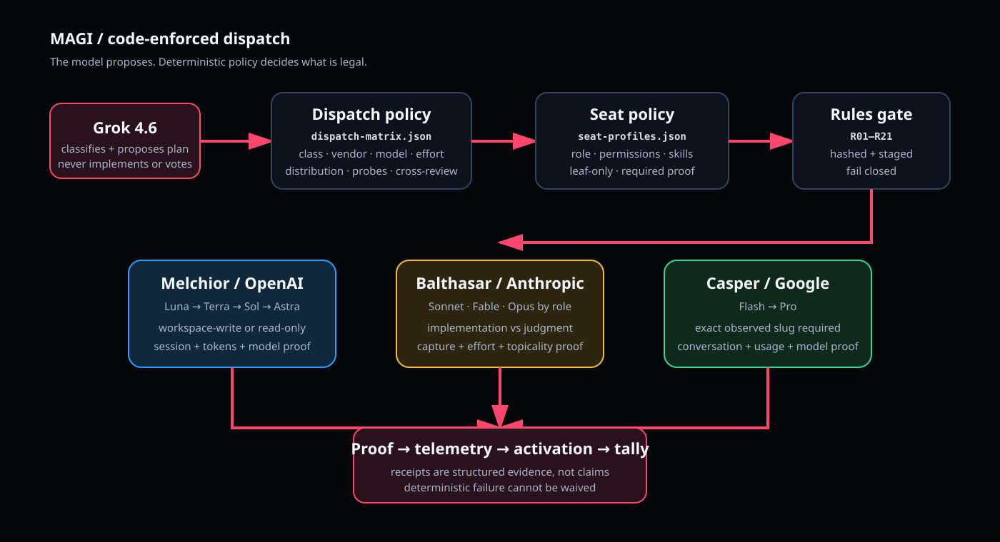

{kind=link}
{kind=link}
PONENS / OPENAI
Technical depth.
Implementation, verification, and adversarial review on GPT-5.6 Sol. GPT-6 Astra is the escalation tier: every Astra route needs a fresh probe and a recorded escalation reason.
Three AI vendors build, challenge, plan, research, and verify. A typed decision engine, Jev, proposes the route and the verdict; deterministic code gates every proposal. Sealed plans and native evidence hold the system to its rules.
Ponens, Scrutator, and Advocatus are vendor-separated seats. Jev classifies work and proposes seats and verdicts as probability distributions; the hosting session runs the tools and collects evidence. Neither supplies a seat result or a vote.
Implementation, verification, and adversarial review on GPT-5.6 Sol. GPT-6 Astra is the escalation tier: every Astra route needs a fresh probe and a recorded escalation reason.
Long-running agentic implementation on Fable; review, planning, and security judgment on Opus. Production proof requires native observed model and effort, and the host attests each response.
Implementation and verification on Gemini 3.8 Flash, review and research on Gemini 3.1 Pro. agy must prove its exact observed slug, including the fused effort, and a denied action fails the dispatch.
Jev proposes the class and the route, recorded with the seal. The validator checks the complete plan: task class, role, vendor, model, effort, scope, author provenance, escalation, and fresh availability evidence.
On narrow screens, scroll the table sideways. Keyboard users can focus it and use the arrow keys.
| Task class | Primary route | Alternates / escalation |
|---|---|---|
| Architecture / planning | Claude Opus · high | GPT-5.6 Sol · Gemini Pro · Astra escalation |
| Standard feature | GPT-5.6 Sol · medium | Claude Fable · Gemini Flash |
| Bulk / mechanical | Gemini Flash · fused-low | GPT-5.6 Sol · Claude Fable |
| Difficult debugging | Claude Fable · xhigh | GPT-5.6 Sol · Gemini Pro · Astra escalation |
| Long-running agentic work | Claude Fable · xhigh | Astra escalation · Gemini Flash · GPT-5.6 Sol |
| Long-context analysis / research | Gemini Pro · fused-high | Astra escalation · Claude Fable · GPT-5.6 Sol |
| Security-sensitive implementation | Claude Opus · xhigh | GPT-5.6 Sol · Gemini Pro · Astra escalation |
| Adversarial review | GPT-5.6 Sol · high | Claude Opus · Gemini Pro · Astra escalation |
| Extreme end-to-end implementation | GPT-6 Astra · high · escalation | Claude Fable · Gemini Pro |
Every exact model/effort pair needs native probe evidence. It expires 60 minutes after the original probe completes; re-importing it does not renew it. Unproven pairs remain unavailable. Astra always requires an escalation flag and a recorded reason.
The runtime seals the whole plan before a production dispatch. Each launch consumes a bound entry. Changed routes, scopes, briefs, or author claims fail validation.

Jev classifies each unit; seal the complete plan against that record, fresh model/effort probes, concrete scopes, and author provenance.
Leaf seats read one hashed rules bundle and lean skills. Sub-agents are denied natively; role permissions bound the work; post-run write audits reject out-of-scope changes.
Foreign reviewers challenge the work. Each captured response carries one APPROVE, ABSTAIN, or REJECT position.
Check native identity, usage, acknowledgments, artifact hashes, write audits, and committed outcomes.
Finalize execution and approval separately. Code counts the native POSITION votes after author recusal; Jev scores each reply for independent evidence. Every run lands as telemetry rows per dispatch, unit, and run.
Execution PASS alone does not approve work. Ordinary approval requires foreign verification and an approving review. Critical approval needs two eligible APPROVE votes. Approval records a decision; it does not deploy or merge work by itself.
A panel is three vendor seats and a count. Whatever convenes it is a host, and a host is not a seat: it dispatches, it captures, it attests what it read, and it never supplies a position. That is why more than one kind of host can exist at all.
| Host | What it is | Arbiter |
|---|---|---|
| cursor-cli | A Cursor chat driving the CLI runtime | Jev |
| synara | Synara driving the same runtime | Jev |
| claude-code | A Claude Code session driving it | none required |
| droppy | Droppy Code, a native macOS app, as its Three Brains panel | none; counted in code |
Droppy Code is the first host that is not a terminal session. It reimplements the protocol in Swift against its own provider sessions, so each seat is a chat a person can watch work. It shares no code with this runtime and does not need to: it writes the same telemetry rows, which is what makes one set of tools read runs from either.
A stdio MCP server exposes the panel to any host that speaks the protocol: VS Code, Cursor, Zed, Claude Desktop, the JetBrains IDEs. No extension has to be written for each one.
Minutes to tens of minutes, against a host that times out in seconds. So the run directory persists between calls: seal a plan, drive one phase, attest what a seat said, read the report.
MCP cannot draw a seat you watch, a verdict card or a seat arrangement. A host that wants those implements the protocol itself, the way Droppy Code did. The row format is what keeps them one system.
One call spends subscription capacity, and it refuses to run unless the caller confirms it. Reading a tool list should not be able to start a nine-seat run.
Project writes are audited after execution. These checks do not isolate vendor home directories or control arbitrary shell calls.
{kind=link}